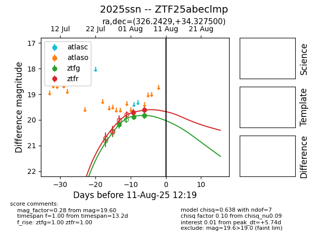

Target 2025ssn at 2025-08-06 08:02, see:
FINK: fink-portal.org/2025ssn
Lasair: lasair-ztf.lsst.ac.uk/objects/2025ssn
ALeRCE: alerce.online/object/2025ssn
TNS: wis-tns.org/object/2025ssn
YSE: ziggy.ucolick.org/yse/transient_detail/2025ssn
alt names
ZTF25abeclmp (ztf,fink)
2025ssn (tns,yse)
coordinates:
equatorial (ra, dec) = (326.2429,+34.32750)
galactic (l, b) = (84.6527,-14.34142)
photometry
last ztfg=19.88, ztfr=19.71
2 ztfg, 1 ztfr detections
